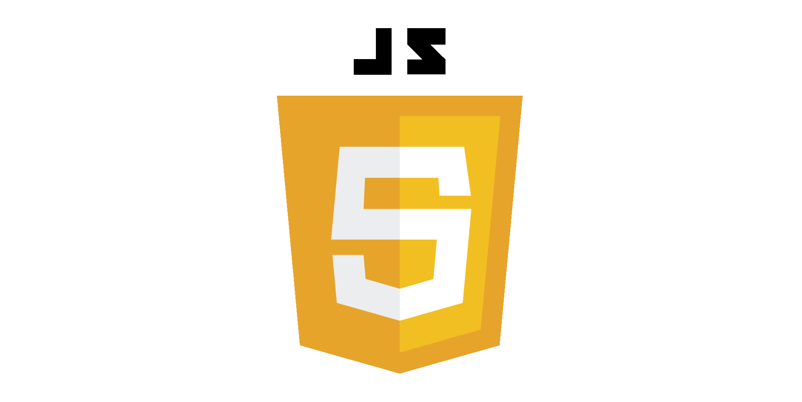

JavaScript
삼육대학교
자바스크립트 설명
자바스크립트(영어: JavaScript)는 객체 기반의 스크립트 프로그래밍 언어이다.
이 언어는
웹 브라우저 내에서 주로 사용되며
, 다른 응용 프로그램의 내장 객체에도 접근할 수 있는 기능을 가지고 있다. 
돌아가기
 자바스크립트 설명
자바스크립트(영어: JavaScript)는 객체 기반의 스크립트 프로그래밍 언어이다.
자바스크립트 설명
자바스크립트(영어: JavaScript)는 객체 기반의 스크립트 프로그래밍 언어이다.